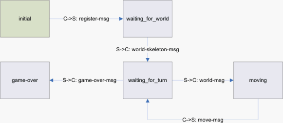
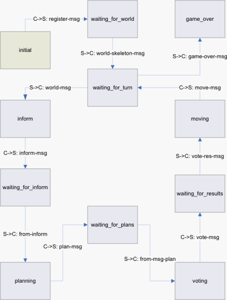

Robber states:

Figure 1: Robber-Bot state machine

Figure 2: Cop-Bot state machine
| name | := | [-a-zA-Z0-9_#()]+ |
names include hyphen, letters, numbers |
| underscore, hash, and parens | |||
| number | := | [0-9]+ | sequence of digits |
| negnumber | := | -[0-9]+ | a negative sign followed by a sequence of digits |
| bot | := | name | |
| loc | := | name | |
| bank-value | := | number | must be between 0 and 1000 inclusive |
| loot | := | number | must be between 0 and 6000 inclusive |
| world | := | number | must be between 0 and 200 inclusive |
| distance | := | number | must be between 0 and the number of nodes inclusive |
| certainty | := | number | negnumber | must be between -100 and 100 inclusive |
| coordinate | := | number | must be betwen 0 and 1023 inclusive |
| eol | := | \r\n | \n | |
| ptype | := | cop-foot | cop-car | robber | |
| edge-type | := | car | foot | |
| node-tag | := | hq | bank | robber-start | ordinary | |
| register-msg | := | reg: bot ptype eol |
| world-skeleton-msg | := | wsk\ eol | ||
| name: bot eol | ||||
| robber: bot eol | ||||
| cop: bot eol | ||||
| cop: bot eol | ||||
| cop: bot eol | ||||
| cop: bot eol | ||||
| cop: bot eol | ||||
| nod\ eol | ||||
| ( nod: loc node-tag coordinate coordinate eol )* | ||||
| nod/ eol | ||||
| edg\ eol | ||||
| ( edg: loc loc edge-type eol )* | ||||
| edg/ eol | ||||
| wsk/ eol |
| world-msg | := | wor\ eol | ||
| wor: world eol | ||||
| rbd: loot eol | ||||
| bv\ eol | ||||
| ( bv: loc bank-value eol )* | ||||
| bv/ eol | ||||
| ev\ eol | ||||
| ( ev: loc world eol )* | ||||
| ev/ eol | ||||
| smell: distance eol | ||||
| pl\ eol | ||||
| ( pl: bot loc ptype eol )* | ||||
| pl/ eol | ||||
| wor/ eol |
| move-msg | := | mov: loc ptype eol |
| game-over-msg | := | game-over eol |
| inform-msg | := | inf\ eol | ||
| ( inf: bot loc ptype world certainty eol )* | ||||
| inf/ eol |
| plan-msg | := | plan\ eol | ||
| ( plan: bot loc ptype world eol )* | ||||
| plan/ eol |
| vote-msg | := | vote\ eol | ||
| ( vote: bot eol )* | ||||
| vote/ eol |
| vote-res-msg | := | winner: bot eol | ||
| | | nowinner: eol |
| from-msg-inform | := | from\ eol | ||||
| ( | from: bot eol | |||||
| inform-msg )* | ||||||
| from/ eol |
| from-msg-plan | := | from\ eol | ||||
| ( | from: bot eol | |||||
| plan-msg )* | ||||||
| from/ eol |
This document was translated from LATEX by HEVEA.